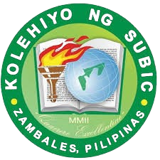

🔍 Research Resources
Dashboard
Focus Tools
Feedback
Credible Academic Sources
Google Scholar
Directory of Open Access Journals (DOAJ)
ERIC (Education Resources Information Center)
JSTOR (limited free access)
PubMed Central
ScienceDirect (open access articles)